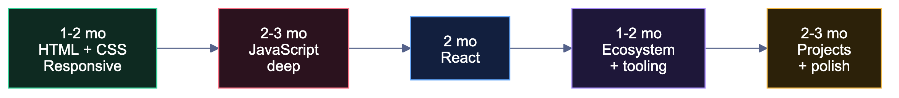

🎨 Frontend Developer
You build what users actually see, click and feel.#
🏠 Home • 💼 All tracks • ⚙️ Backend • 🧩 Full Stack
Is this you?#
✅ Pick frontend if: you like seeing instant visual results · you have an eye for design and detail · you enjoy making things feel smooth · you get satisfaction from "this looks exactly right"
❌ Skip it if: you find CSS maddening rather than interesting · you'd rather think about data and algorithms than pixels · you dislike browser quirks and edge cases
Best part: the fastest visible progress of any track. You build something that looks real in week 2, which matters enormously for staying motivated.
Hardest part: CSS layout is genuinely harder than it looks, and state management in large apps gets complex fast. Also, the field is crowded at the junior level — you need real projects to stand out.
The roadmap#

Phase 1 — HTML & CSS (1–2 months)#
- Semantic HTML —
header,nav,main,section,article,footer - Forms, inputs, validation, labels
- Accessibility — alt text, ARIA basics, keyboard navigation (most students skip this; interviewers notice when you don't)
- CSS selectors, specificity, the box model
- Flexbox — learn it properly, you'll use it daily
- CSS Grid — for page layouts
- Responsive design — media queries, mobile-first,
rem/em/vh/vw - Positioning: static, relative, absolute, fixed, sticky
- Transitions, transforms, animations
- CSS variables
Build: 5 pixel-perfect clones (a landing page, a pricing page, a dashboard layout, a blog, a product page). Clone real sites — Netflix, Spotify, Airbnb, Linear.
Phase 2 — JavaScript, properly (2–3 months)#
This is the phase that separates real frontend developers from people who can only follow React tutorials. Do not rush it.
- Variables,
let/const, data types, type coercion - Functions, arrow functions, callbacks
- Arrays:
map,filter,reduce,find,some,every,sort - Objects, destructuring, spread/rest
- The DOM — selecting, creating, modifying, removing elements
- Events — listeners, bubbling, delegation,
preventDefault - Async JS — callbacks → Promises →
async/await fetch, REST APIs, JSON, error handling- Closures,
this, hoisting, the event loop, scope (the classic interview five) - ES6+ modules,
import/export localStorage/sessionStorage
Build: weather app (real API), quiz app, expense tracker with localStorage, infinite-scroll image gallery, typing-speed test. All in vanilla JS, no framework.
❓ JavaScript interview questions you WILL be asked
- What is a closure? Give a real use case.
- Explain the event loop, call stack and task queue.
varvsletvsconst— and what is hoisting?- What does
thisrefer to in different contexts? - Difference between
==and===? - What is event bubbling? What is event delegation and why use it?
- Promise vs
async/await— and what doesPromise.alldo? - Explain debouncing and throttling. When would you use each?
- What is the prototype chain?
- Shallow copy vs deep copy — how do you deep-clone an object?
- What are higher-order functions?
- Explain
call,applyandbind.
Practice explaining these out loud. Knowing them silently is worth nothing in an interview.
Phase 3 — React (2 months)#
- Components, JSX, props
useState,useEffect(and the dependency array — really understand it)- Lists, keys, conditional rendering
- Forms — controlled vs uncontrolled
useRef,useMemo,useCallback— and when not to use them- Custom hooks
- Context API
- React Router
- Data fetching patterns, loading and error states
- State management — Zustand or Redux Toolkit (learn one)
React.memo, lazy loading, code splitting- Error boundaries
Build: e-commerce UI with cart and filters, a Kanban board with drag-and-drop, a real-time chat UI.
Phase 4 — Ecosystem & tooling (1–2 months)#
- Tailwind CSS — the industry default now, learn it
- TypeScript — increasingly mandatory. Types, interfaces, generics basics
- Next.js — SSR/SSG, App Router, API routes (huge hiring advantage)
- Vite, npm/pnpm,
package.json - Chrome DevTools — really learn the Network and Performance tabs
- Testing — Jest + React Testing Library basics (almost no student does this; big differentiator)
- Git workflows — branches, PRs, code review
- Deployment — Vercel or Netlify
- Core Web Vitals, Lighthouse, basic performance optimisation
💡 Projects that get you hired#
| Level | Project | What it proves |
|---|---|---|
| 🟢 | Portfolio site | You can ship something live |
| 🟢 | Weather / movie app | API integration, async handling, error states |
| 🟡 | E-commerce frontend | Cart state, filters, search, pagination, routing |
| 🟡 | Admin dashboard | Charts, tables, complex layouts, data density |
| 🟠 | Real-time chat UI | WebSockets, optimistic updates |
| 🟠 | Collaborative editor | Hard state management, conflict handling |
| 🔥 | Clone with real backend (Twitter/Notion/Trello) | Full product thinking, auth, persistence |
Tip
Frontend is judged visually. Your project must look good — recruiters make a judgement in 5 seconds. Use Tailwind, copy layouts from Dribbble or Mobbin, add dark mode, make it responsive, and add smooth transitions. A technically simple project that looks polished beats a complex one that looks like a 2009 college assignment.
🎤 Interview breakdown#
| Round | What's tested | How to prepare |
|---|---|---|
| OA | DSA (arrays, strings, hashmaps) + JS output questions | core/dsa.md |
| Machine coding | Build a component in 60–90 min (most important round) | Practice: star rating, autocomplete, infinite scroll, carousel, todo with filters |
| JS deep-dive | Closures, event loop, this, promises, polyfills | The list above, out loud |
| React round | Hooks, re-renders, performance, state design | Build enough that this is instinct |
| CSS round | Flexbox, Grid, centring, responsive, specificity | Practice on CSS Battle |
| System design (frontend) | Component architecture, state management, rendering strategy, caching | For 2+ YOE, sometimes freshers at good companies |
| HR | Projects, motivation, behavioural | placements/interview-playbook.md |
🔨 Machine-coding round: practise these exact problems
These come up again and again in Indian frontend interviews:
- Star rating component (hover, click, half stars)
- Autocomplete / typeahead with debouncing
- Infinite scroll using IntersectionObserver
- Image carousel with autoplay
- Nested comments (recursive rendering)
- Todo list with filters and localStorage
- Accordion / tabs component
- Pagination component
- Modal with a portal and focus trap
- File explorer tree (recursion)
- Toast notification system
- Debounce and throttle implemented from scratch
- Polyfills:
Array.map,Promise.all,bind, deep clone
Practise each in under 45 minutes. Speed matters — the round is timed.
🏢 Who hires frontend developers#
| Level | Companies | CTC |
|---|---|---|
| 🟢 Service | TCS, Infosys, Wipro, Cognizant, Accenture, LTIMindtree | ₹3.5–7 LPA |
| 🔵 Mid product | Zoho, Nagarro, Publicis Sapient, Thoughtworks, Josh Tech, funded startups | ₹6–15 LPA |
| 🟣 Strong product | Razorpay, Zomato, Swiggy, PhonePe, Groww, CRED, Postman, Sprinklr, Zeta | ₹15–30 LPA |
| 🔴 Top tier | Google, Microsoft, Adobe, Atlassian, Uber, Flipkart, Media.net | ₹25–60 LPA |
📚 Free resources#
| Topic | Resource |
|---|---|
| HTML/CSS/JS basics | freeCodeCamp · MDN Web Docs |
| CSS layout | Flexbox Froggy · Grid Garden · CSS-Tricks guides |
| JavaScript deep | javascript.info (the best free JS resource, period) |
| JS challenges | Namaste JavaScript (YouTube) · JS30 |
| React | react.dev (official, excellent) |
| TypeScript | Total TypeScript free tutorials |
| Next.js | nextjs.org/learn |
| Tailwind | tailwindcss.com/docs |
| Practice UIs | Frontend Mentor (real designs to build) |
| Machine coding | GreatFrontEnd · BigFrontEnd.dev |
| Design inspiration | Dribbble · Mobbin · Land-book |
⚠️ Frontend-specific mistakes#
| Mistake | Fix |
|---|---|
| Learning React before JS | You'll hit a wall at hooks. Do 2–3 months of vanilla JS first. |
| Ugly projects | Frontend is judged on looks. Polish is part of the skill. |
| Skipping responsive design | Recruiters open your site on a phone. Test on mobile. |
| No accessibility | Big companies genuinely care. It's cheap to learn and it differentiates you. |
| Ignoring DSA | Product companies still test DSA for frontend roles. |
| Never practising machine coding | This round decides most frontend offers. Practise timed. |
| Only tutorials, no original builds | Rebuild everything without the video. |
| Skipping TypeScript | Most serious frontend jobs now require it. |
Frontend is the fastest way to build something people can see. Use that.#
🏠 Home • 💼 Tracks • 🧩 Full Stack • 💡 Projects • 📚 DSA